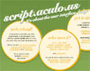

Advertisements
Copyright © tutorialspoint.com
|  |
script.aculo.us is a JavaScript library built on the Prototype JavaScript Framework. script.aculo.us provides dynamic visual effects and other functionality via the Document Object Model (DOM). This tutorial gives a complete understanding on script.aculo.us. Send your feedback using Contact Us Form |
Home: Startup page for this tutorial. Same page you are looking at right now.
Short Overview: Gives a brief overview of script.aculo.us.
Major Modules : List out all the modules supported by script.aculo.us.
Visual Effects : Gives complete understanding on creation of visual effects using script.aculo.us.
Drag & Drop: Explains Drag and Drop functionality in detail.
Sorting Elements: Learn how to sort various elements using drag and drop functionality.
Create Sliders: Yes, you can provide a multi purpose slider at your web site
Auto Completion: Explains how to implement Auto Completion
In Place Editing: Click and update in place using script.aculo.us.
Copyright © tutorialspoint.com